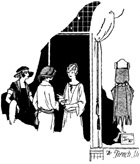
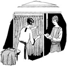
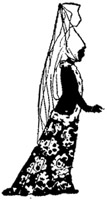

1926—The New-Way Course in Fashionable Clothes-Making
Lesson 55—Business Methods
To the Dressmaker
This lesson is going to be devoted to you—to your attitude toward customers, to your dress, your manner. It is your personality that will steer the shop through the first troubled waters of its existence. You will be at the helm, guiding your shop into the channels of success.
It is of utmost importance that you have a pleasing, attractive personality. It is your personality that will give to the shop an air of distinctiveness which attracts and holds customers. Your stock consists not only of materials and frocks—it must contain also a good supply of will-power, determination, optimism, energy. If you are sensitive, easily disturbed over trifles, quick to show annoyance or disapproval, be sure to master these faults before attempting to go into business. They are the kind of faults that rob you of your big chance for success, keep you from giving to your business the best that is in you.
First in importance is your dress. Do not make the mistake of thinking that eccentricity in dress expresses individuality. It does not. Let your personality manifest itself, not in vividly-colored, queer frocks, but in your inherent neatness, in your simplicity of dress, your attractiveness. If you expect to do part of the dressmaking yourself, as you probably do, wear simply styled frocks of washable materials that can be kept neat and clean easily, and wear pretty cuffs and collars as they always give a smart, business-like appearance. Avoid frocks of silk and wool as they will not wear nicely.
But if you expect solely to welcome customers and devote your entire time and attention towards creating a favorable impression upon your clients, leaving the actual work of sewing to employees, then you may dress as attractively and stylishly as you wish. It is a wise plan, though, to avoid the extreme in styles as much women object to extreme styles. And when you are in the dress business you must dress to please your customers as well as yourself!
Greeting the Customer
New methods and conditions have changed dressmaking from a drudgery—for it was a drudgery at one time—into a dignified, pleasant art. The shop owner should remember this, and she should remember that as an art, it warrants all the courtesy, culture and dignity that one finds in social life.
In greeting one's customers, for instance, one should strive to adhere as closely as possible to the rules of good form and politeness. Yet, one should avoid over-enthusiasm, sentiment. The right way to greet a customer is to say, simply and sincerely, "How do you do, Mrs. Blank. I am glad you have come today as I have some beautiful satin I want to show you." It would be a mistake to grasp the customer's hands, as so many like to, and exclaim, "Oh my dear, how do you do! I'm delighted to see you. How have you been?" and similar fine phrases that mean nothing and make the customer feel embarrassed, ill at ease. Nor is it correct to nod coldly to the customer and walk away, leaving her to find a sales person as best she may.
It may not seem so at first, but it is very important—this business of greeting the customer correctly. Often it means the difference between a sale made and a sale lost. It requires a knack to greet each customer as she should be greeted—pleasantly, politely, in a dignified manner—but it is a knack that anyone can acquire with a little honest effort and practice.
Having greeted the customer, you may turn her over to a salesperson or wait on her yourself. First inquire what she would like to see. If she seems in doubt, you may suggest something. Provide a comfortable chair for her while you bring out the frocks and display them. Perhaps she would like to glance through a fashion magazine. Show in your every word and gesture that you are eager to please her, to give her what she wants and what you think she ought to have; but never let the customer get the impression that you are trying to hurry her into a sale—trying to force her into buying something.
There is no advertisement so effective as a pleased customer. Be prompt in complying with requests, in keeping promises. Be courteous and considerate at all times. Take a sincere interest in the requirements of your customer, and let her know that you have a personal record of her on file. Be enthusiastic, force yourself to be enthusiastic—you will be amazed when you see how sheer enthusiasm alone will carry you over places that seem almost impossible.
Another thing to remember is that not all customers are alike. Some will be delighted if you tell them they should wear long lines to bring out the lines of the figure to best advantage. Others will resent this, think you are trying to sell them something they do not want. Some of your customers will be pleasant, others grouchy. Some will know what they want, others won't. You must study your customers, learn their characteristics, their likes and dislikes. And you should use great tact and caution in dealing with them. Make your motto always "The customer is right" or "The customer must be pleased." It is the only way to achieve big success in business of any kind—but particularly in the dressmaking business.
Little Services that Count
People like to feel that other people are thinking about them, doing things for them. The shop owner who makes her customers feel that she really has their interests at heart, is really interested in giving them the kind of clothes they ought to have, is sure of success. And there are many ways in which she can give her customers this impression.
There is, for instance, one service that customers always appreciate. By having samples of all the newest fabrics on hand, in the newest colors, marked with price and width, the dressmaker can help the customer considerably not only in selecting her style, but the kind of color of material that will be best suited to her. It is much more convenient for the customer than going to the store herself to purchase the material, or describing it to the dressmaker in the hope that she may be able to purchase exactly what she wants.
Another service customers will appreciate is that of having on display those types of garments most suited to the customer's type of figure. It is not necessary to have the garment itself on display—a picture will do. In other words, instead of having a mass of pictures through which the customer must wade in order to find the style she wants, have just four of five in a group—one group for the short-stout type, one group for the slender, tall type, etc.
Another thing: Do not let the customer pick out the dress herself. Suggest to her why a certain style would be becoming; why another style would not. Take an interest in the selection of the style. Be as animated and enthusiastic as the customer. Give her plenty of your time. Do not let her get the impression that you are indifferent, uninterested. A woman will always return to the shop where she feels she will get individual, personal attention—where the dressmaker will take as much interest in her frock as though it were for herself.
In other words, the dressmaker should not be merely a dressmaker. She should become an expert advisor and counselor. She should make herself valuable to her customers, so valuable that they will not be able to do without her. She should take a personal interest in the work, learn to enjoy it, go to it each morning with enthusiasm. It is a great feeling of satisfaction to serve one's customers to the best of one's ability—and the customers invariably respond. They are quicker than you would suppose to recognize true service, and they appreciate it.
If you want a big successful business, a business you will be proud of and that will be a constant source of profit and pleasure to you, serve your customers well. It will pay you big returns.
The Ethics of Dressmaking
There are certain important ethical problems that will confront the dressmaker—among them, that of showing to one customer a frock made for another. To do this is considered a breach of business etiquette, as it is unfair to the customer for whom the frock is being made. All business with customers should be kept strictly confidential, for the benefit of the dressmaker as well as for the benefit other customer. The shop owner will find that it is the best policy.
It is also important, especially in smaller towns, for the dressmaker to avoid making the same style and design for two or more people. If a customer chooses a style that has already been made up for another customer, the dressmaker should tell her about it, suggesting another style that she believes will be even more effective. Then, if the customer still wants the dress despite the fact that someone else has it, the dressmaker should immediately comply with her wishes, saying something to this effect:
"We shall make it with a slightly different sleeve, Mrs. Blank. I have in mind a sleeve that will be very much more becoming to you than this puffed sleeve. And I'm sure you'd find a round neck a great deal more becoming. Now let me see—blue is your best color, isn't it?"
In this way, she will not only be agreeing with the customer and giving her what she wants, but also removing any opposition to the style by explaining changes to be made. Both the customer and dressmaker will be satisfied by such an arrangement, but the customer will certainly be unhappy and disappointed if she meets someone in the same frock as her own, without having been told of it beforehand.
Taking Stock
This is probably the best place, being a lesson devoted to the shop owner and her shop, to tell about the importance of taking stock. The dressmaker who does not know her own shop is like the parrot who repeats things but doesn't know what he is saying. It is essential to the welfare of her business that she know exactly what stock she has, where it is, and how it can be used. This eliminates waste, avoids losses, does away with needless expenditures.
Large concerns usually take stock twice a year. Some concerns prefer to take it once a year, in January. But for the dressmaker, with her small shop, it is wisest to take stock at the end of each season—which means four times a year. Even the dressmaker who uses a room in her home should "take stock" occasionally to see what she needs and what she really ought to get rid of.
When the dressmaker takes stock, she should make a list of every bit of merchandise she has in her shop. She should compute not only what she will probably need, but what she will be able to use the left-over materials for. She should make a list of every dress on hand, its value, its selling price. By the time the next season begins, she should have everything in readiness to meet the new demand. It is very poor policy indeed to start a new season short in some materials and overstocked in others.